Quick Start Guide — WinForms
In this Quick Start Guide you will learn how to download the DotNetBrowser library, get an evaluation license, create, configure and run your first .NET WinForms Application that loads and displays the www.google.com web page.
Environment: Windows 7, Microsoft Visual Studio 2013, .NET Framework 4.0.
Download the Library
To download the DotNetBrowser library navigate to http://www.teamdev.com/dotnetbrowser
and click the Download button. Extract the downloaded dotnetbrowser.zip archive into the D:\Projects\DotNetBrowser\ directory.
Download License
To get a free 30-days evaluation license please fill in the web form
and click Send Me Evaluation Key button. You will receive an email with a link. Use this link to download the evaluation license (teamdev.licenses). Save the license file in the D:\Projects\DotNetBrowser\Library\ directory.
Create a Windows Forms Application
Create a new WinForms.DotNetBrowser Windows Forms Application C# Project in the D:\Projects\DotNetBrowser directory:
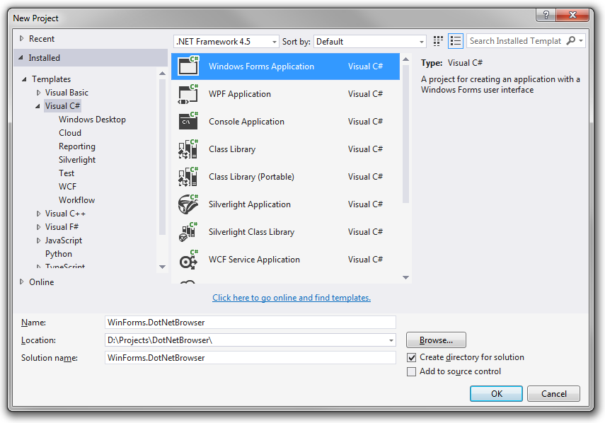
Add DotNetBrowser.dll
In Solution Explorer right-click References and select the Add Reference... menu item:
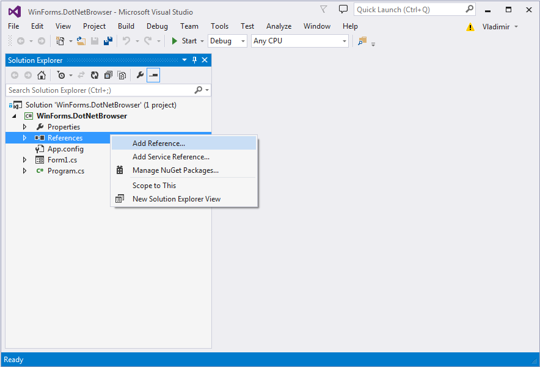
In the opened Reference Manager dialog click the Browse... button:
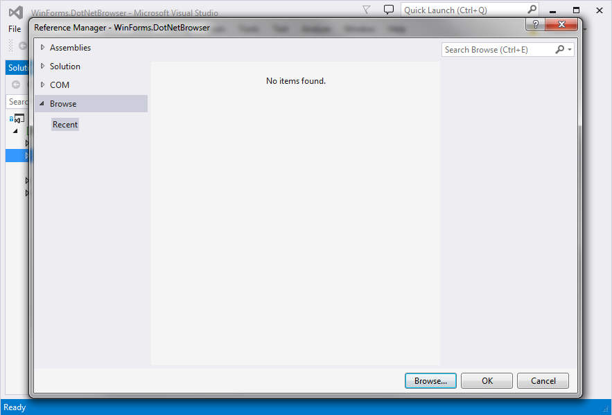
Select the D:\Projects\DotNetBrowser\Library\DotNetBrowser.dll file and click the Add button:
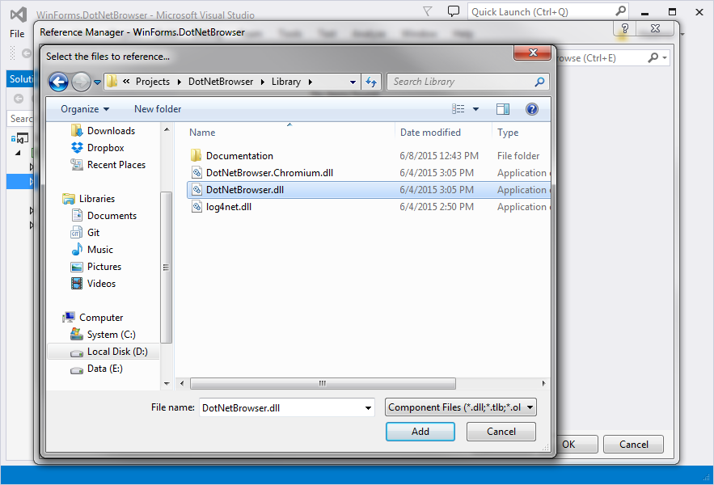
Click OK:
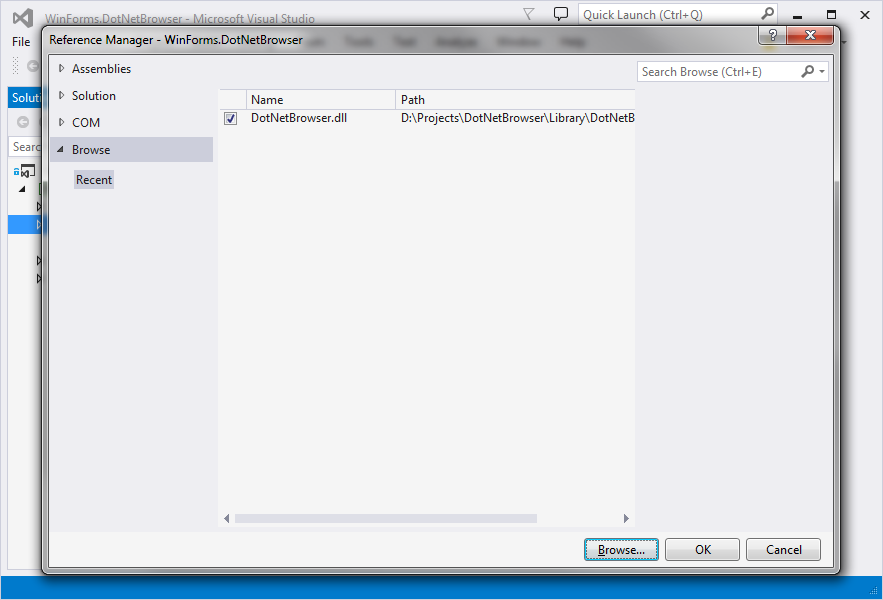
Add the License
In Solution Explorer right-click WPF.DotNetBrowser and select the Add — Existing Item... menu item:
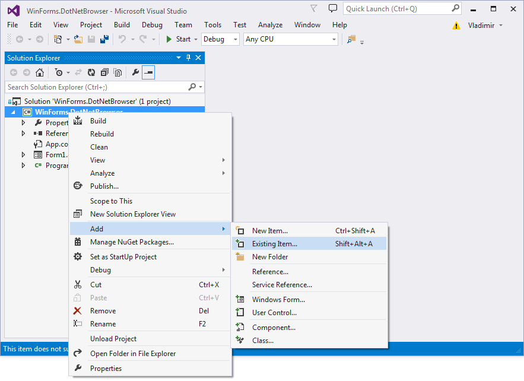
In the File Open dialog select the D:\Projects\DotNetBrowser\Library\teamdev.licenses file and click Add button:
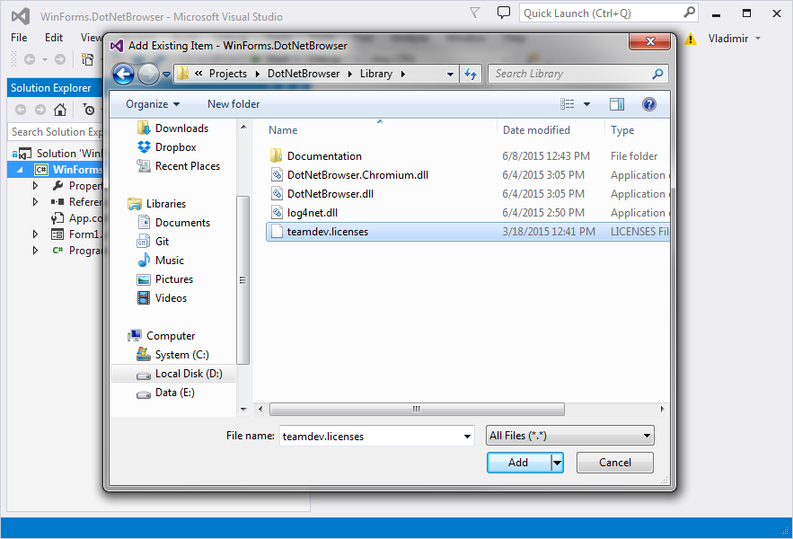
In Solution Explorer right-click teamdev.licenses and select Properties:
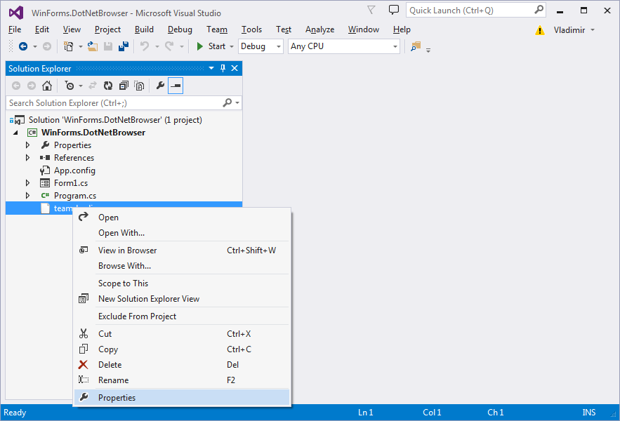
In the Properties panel change Build Action to Embedded Resource:
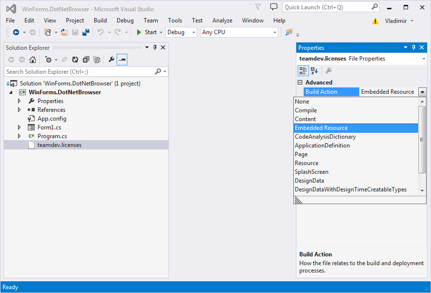
Change the Source Code
Insert the following code into the Form1.cs file:
using System;
using System.Collections.Generic;
using System.ComponentModel;
using System.Data;
using System.Drawing;
using System.Linq;
using System.Text;
using System.Threading.Tasks;
using System.Windows.Forms;
using DotNetBrowser;
using DotNetBrowser.WindowsForm;
namespace WinForms.DotNetBrowser
{
public partial class Form1 : Form
{
public Form1()
{
InitializeComponent();
Browser browser = BrowserFactory.Create();
WinFormsBrowserView browserView = new WinFormsBrowserView(browser);
Controls.Add(browserView);
browser.LoadURL("http://www.google.com");
}
}
}
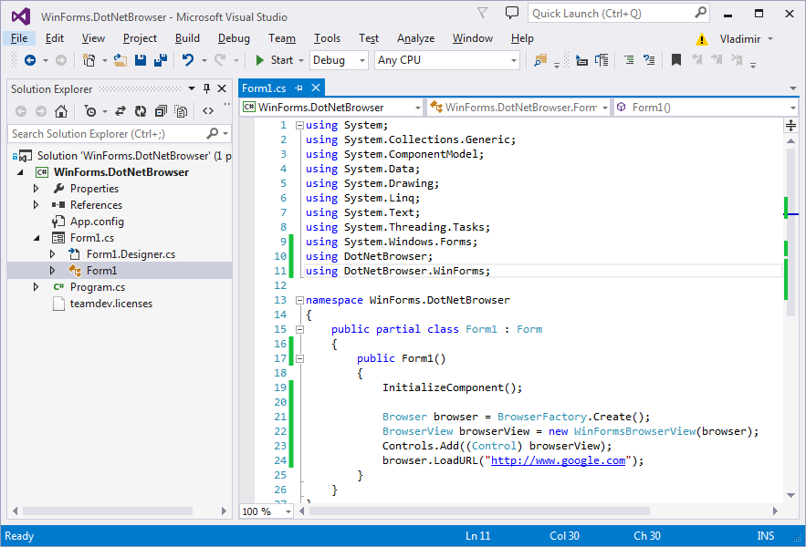
Run the Application
To run the application press F5 or click Start button in the toolbar. If you do everything correctly then you should see the following output:
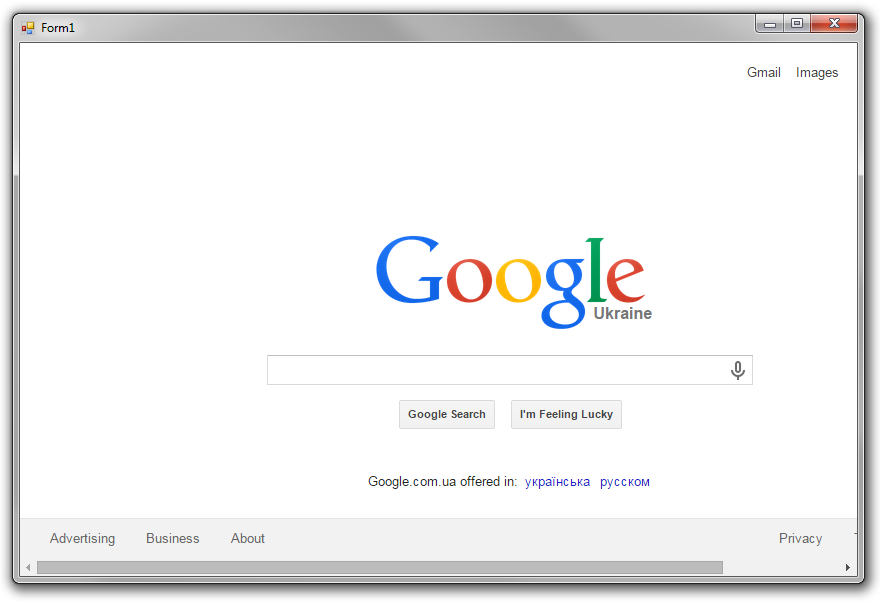